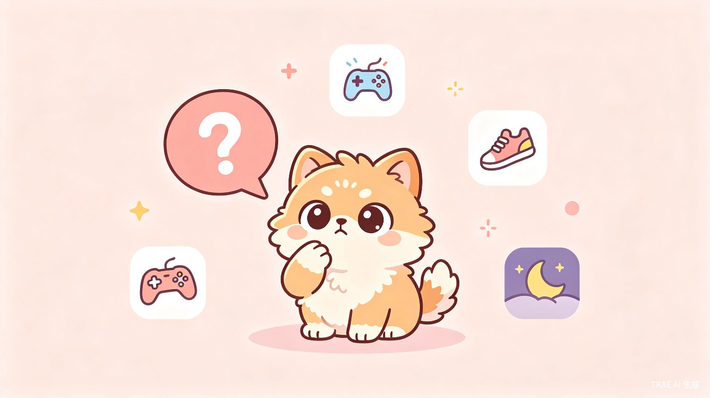

需求背景
为什么做这款产品
当代年轻情侣在相处过程中面临一个普遍的沟通困境：很多心里话当面说不出口。想确认对方的心意、想问一些敏感小问题、想表达自己的付出，这些话题在面对面时往往因为尴尬、怕被拒绝、或担心破坏气氛而被咽回肚子里。
现有的社交工具（微信、QQ）虽然解决了即时通讯问题，但缺乏为情侣关系量身定制的"缓冲层"。普通聊天窗口太直接，没有给害羞和犹豫留空间。情侣类App市场上虽然已有一些产品，但大多聚焦于纪念日提醒或位置共享，真正帮助情侣深度沟通、记录双向奔赴证据的产品仍然稀缺。
核心洞察
产品愿景
打造一款以虚拟小动物为情感桥梁的情侣记录App，让不好意思开口的话通过小动物自然传递，让双向奔赴的努力在恰当时机被看见，让恋爱的每一天都有迹可循。
用户与场景
目标用户画像
| 维度 | 恋爱期用户 | 已婚用户 |
|---|---|---|
| 年龄 | 18-28岁 | 25-35岁 |
| 关系阶段 | 热恋期、磨合期 | 新婚、稳定期 |
| 核心诉求 | 确认心意、增进了解、表达害羞的话 | 维系新鲜感、记录共同生活、仪式感 |
| 使用频率 | 高频（每日多次） | 中频（每日1-2次） |
| 痛点 | 不敢问敏感问题、不确定对方心意 | 生活趋于平淡、缺乏共同话题 |
核心使用场景
场景一：借小动物之口提问
女生想知道男生对未来规划的想法，但直接问太严肃。通过小动物在男生打完游戏后"自然"抛出话题。
场景二：共同日记本
两人各自记录为对方做的事（如"今天给他带了早餐"），在确立夫妻关系前互相不可见，作为未来的惊喜。
场景三：小游戏互动
异地情侣通过你画我猜、成语接龙等小游戏增加互动，小动物作为游戏主持和裁判。
场景四：睡前回顾
每晚睡前打开App，小动物总结今天的互动，展示双方的"心动指数"和今日回忆。
产品定位
一句话定位
"让每一句不好意思说出口的话，都有小动物帮你传达"
核心价值主张
- 情感缓冲：虚拟小动物作为"第三方信使"，降低情侣间敏感话题的沟通门槛。
- 双向记录：共同日记本留存双方为感情付出的证据，在恰当时机解锁，制造情感惊喜。
- 仪式养成：每日记录、每日互动，将表达爱意变成自然的习惯。
差异化优势
| 竞品类型 | 代表产品 | 它们的局限 | 我们的差异 |
|---|---|---|---|
| 纪念日工具 | 恋爱记、小恩爱 | 功能同质化，缺乏情感深度 | 以"沟通"为核心，而非"记录" |
| 位置共享 | Bind、Zenly | 隐私争议大，容易变成监控 | 不依赖位置，依赖情感互动 |
| 通用社交 | 微信、QQ | 缺乏情侣场景的专属设计 | 全链路为情侣关系定制 |
功能需求
功能总览
| # | 模块 | 功能描述 | 优先级 |
|---|---|---|---|
| 1 | 情侣绑定 | 通过邀请码/二维码完成一对一绑定，绑定后解锁全部功能。解绑需双方确认，数据保留30天。 | P0 |
| 2 | 虚拟小动物 | 两人共同养育一只虚拟小动物，小动物会成长、有情绪、会提醒互动。是App的核心情感载体。 | P0 |
| 3 | 代问功能 | 用户通过小动物向对方提问，可选择提问时机（即时/对方空闲时/睡前）。支持预设问题库和自定义问题。 | P0 |
| 4 | 共同日记本 | 双人日记空间，各自记录为感情做的事。恋爱阶段互相不可见，确立夫妻关系后解锁全部内容。 | P0 |
| 5 | 小游戏中心 | 你画我猜、成语接龙、默契问答等双人小游戏，由小动物主持，增加日常互动乐趣。 | P1 |
| 6 | 心动时刻 | 自动记录两人的互动里程碑（第一次对话、连续打卡天数等），生成时间轴回顾。 | P1 |
| 7 | 每日任务 | 小动物每日推送一个"今日任务"（如"给对方发一句夸奖"），完成后双方获得成长值。 | P1 |
| 8 | 关系进阶 | 支持从"恋爱中"到"已婚"的状态切换，切换后解锁日记本全部内容和新的互动玩法。 | P2 |
核心模块详解
模块一：情侣绑定
业务流程：
- 用户A注册后生成专属邀请码（6位数字+字母组合）。
- 用户B在注册页输入邀请码，或扫描用户A分享的二维码。
- 双方确认绑定关系，选择关系阶段（恋爱中/已婚）。
- 绑定成功后，共同领养第一只虚拟小动物。
边界规则：
- 一个账号同时只能与一人绑定。
- 解绑需双方确认，单方申请后对方有7天确认期。
- 解绑后数据保留30天，期间可恢复关系。
模块二：虚拟小动物
核心机制：
- 成长体系：小动物通过每日互动、完成任务、游戏获胜获得成长值，升级后解锁新外观和互动动作。
- 情绪系统：小动物有饥饿度、心情值、亲密度三个属性。长时间不互动会"情绪低落"，通过互动恢复。
- 智能时机：小动物会根据双方的使用习惯（如对方最近一次打开游戏类App的时间）判断"合适时机"来抛出问题。
- 外观定制：提供多种动物类型（狐狸、猫咪、兔子、企鹅等），每种有多个配色方案。
互动方式：
- 点击小动物：触发随机互动动作（摇尾巴、打滚、比心）。
- 长按小动物：进入"悄悄话"模式，输入想让小动物传达的话。
- 滑动小动物：切换不同功能入口（代问/日记/游戏）。
模块三：代问功能
业务流程：
- 用户在"代问"页面选择或输入问题。
- 选择提问时机：立即发送 / 对方空闲时 / 睡前 / 自定义时间。
- 小动物以"刚刚想到一个有趣的问题"等自然话术向对方展示问题。
- 对方回答后，答案通过小动物返回答问方。
- 双方可看到问答记录，作为"心动档案"留存。
预设问题库（分类）：
- 心意确认："你最喜欢我哪一点？""我们第一次约会你紧张吗？"
- 未来规划："你想过我们以后养什么宠物吗？""你觉得理想的周末是怎样的？"
- 日常关心："最近工作累不累？有什么我能帮忙的吗？"
- 趣味互动："如果我们是动物，你觉得我是什么？""用三个字形容现在的我。"
边界规则：
- 每日代问次数上限为5次（防止过度使用）。
- 对方可选择"暂不回答"，问题会在24小时后再次 gentle 提醒一次。
- 敏感问题（如涉及前任）需双方均开启"深度模式"才解锁。
模块四：共同日记本
核心机制：
- 双向记录：双方各自记录为感情付出的细碎小事，如"今天早起给她做了早餐""偷偷记住了他喜欢的奶茶口味"。
- 阶段可见性：恋爱阶段，双方只能看到自己写的内容，看不到对方的。确立夫妻关系后，全部内容双向解锁。
- 记录形式：支持文字、图片、语音、位置标记。每条记录可关联一个"心情标签"。
- 自动汇总：每周生成"本周心动报告"，展示记录条数、高频关键词、最暖心的一条。
解锁仪式：
当双方确认关系进阶为"已婚"时，App触发"心动解锁"仪式——小动物捧着日记本，逐条展示对方在恋爱期间记录的所有内容，配合背景音乐和时间轴动画，形成强烈的情感冲击。
模块五：小游戏中心
首期游戏列表：
- 你画我猜：一方作画，另一方猜词。小动物作为裁判计分，支持语音/文字猜题。
- 成语接龙：轮流接龙，接不上的一方接受"惩罚任务"（如给对方发一句情话）。
- 默契问答：系统出题，双方同时回答，答案一致得分。题目涵盖生活习惯、喜好、回忆等。
- 心动拼图：将两人的合照切割成拼图，合作完成。
游戏奖励：
- 获胜方获得成长值和"爱心币"（用于兑换小动物装饰）。
- 连续获胜3场触发"连胜奖励"，解锁限定动作。
- 游戏结果自动记录到"心动时刻"。
原型示意
首页与小动物互动

共同日记本
产品架构图
graph TD
A[用户A] -->|绑定| C[情侣关系中心]
B[用户B] -->|绑定| C
C --> D[虚拟小动物]
C --> E[代问系统]
C --> F[共同日记本]
C --> G[小游戏中心]
C --> H[心动时刻]
D --> I[成长与情绪引擎]
E --> J[时机判断算法]
F --> K[阶段可见性控制]
G --> L[实时对战服务]
核心流程图：代问功能
sequenceDiagram
participant A as 用户A
participant P as 小动物
participant B as 用户B
A->>P: 提交问题+选择时机
P->>P: 判断时机是否合适
alt 时机合适
P->>B: "突然想到一个问题..."
B->>P: 回答问题
P->>A: 返回答案
else 时机不合适
P->>P: 等待合适时机
P->>B: 延迟发送
end
MVP规划
MVP范围
首期版本聚焦"绑定-小动物-代问-日记"四大核心闭环，验证"小动物作为情感桥梁"的产品假设。
| 模块 | MVP功能 | 排除项 |
|---|---|---|
| 情侣绑定 | 邀请码绑定、关系阶段选择 | 二维码扫描、解绑流程 |
| 虚拟小动物 | 基础成长、3种外观、点击互动 | 情绪系统、智能时机判断 |
| 代问 | 预设问题库、即时发送、问答记录 | 时机判断、自定义问题 |
| 日记本 | 文字记录、阶段不可见、个人视图 | 图片/语音、解锁仪式 |
| 小游戏 | 默契问答1款 | 你画我猜、成语接龙 |
技术选型约束
后端：Node.js + MongoDB（快速迭代，Schema灵活）
实时通信：WebSocket（代问推送、游戏对战）
存储：阿里云OSS（图片/语音资源）
产品路线图
MVP验证
完成绑定、小动物基础版、代问（即时）、日记本（文字）功能。内测50对情侣，验证核心假设。
体验打磨
上线时机判断算法、情绪系统、自定义问题、图片日记。新增"每日任务"模块。公测500对。
互动扩展
上线你画我猜、成语接龙等2-3款小游戏。解锁"已婚"状态切换和日记本解锁仪式。启动iOS版本开发。
生态建设
上线社区功能（匿名分享心动故事）、虚拟道具商城、会员增值服务。探索B端合作（婚庆、摄影）。
数据指标
核心指标
过程指标
| 指标 | 定义 | 目标值 |
|---|---|---|
| 绑定转化率 | 注册后完成情侣绑定的比例 | > 70% |
| 日记记录率 | 活跃用户中每周至少记录1条的比例 | > 40% |
| 代问完成率 | 发出的代问被对方回答的比例 | > 60% |
| 小动物互动频次 | 用户每日点击/互动小动物的次数 | > 5次 |
| 7日留存 | 注册后第7天仍活跃的比例 | > 35% |
需要追踪的事件
- 绑定成功：用于计算绑定转化率，识别绑定流程卡点。
- 代问发送/回答：用于优化问题库和时机判断算法。
- 日记记录：用于分析记录时段偏好和内容类型分布。
- 小动物互动：用于评估小动物作为情感载体的吸引力。
- 游戏参与/完成：用于筛选高留存游戏类型。
风险与应对
| 风险 | 概率 | 影响 | 应对策略 |
|---|---|---|---|
| 情侣解绑导致用户流失 | 高 | 高 | 解绑后保留数据30天并提供"冷静期"；设计单人模式保留基础功能。 |
| 代问功能被滥用 | 中 | 中 | 每日次数限制、敏感词过滤、举报机制。 |
| 小动物新鲜感消退 | 中 | 高 | 持续更新外观和动作、节日限定内容、与真实事件联动（如对方生日时小动物特殊表现）。 |
| 日记本解锁后用户流失 | 低 | 中 | 解锁后开启"婚后模式"新玩法（如共同目标设定、家庭账本）。 |